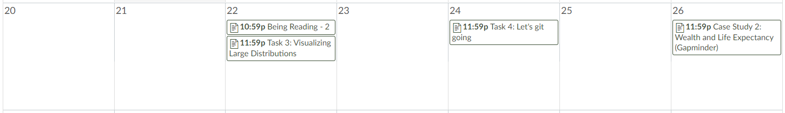
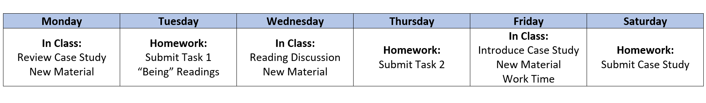
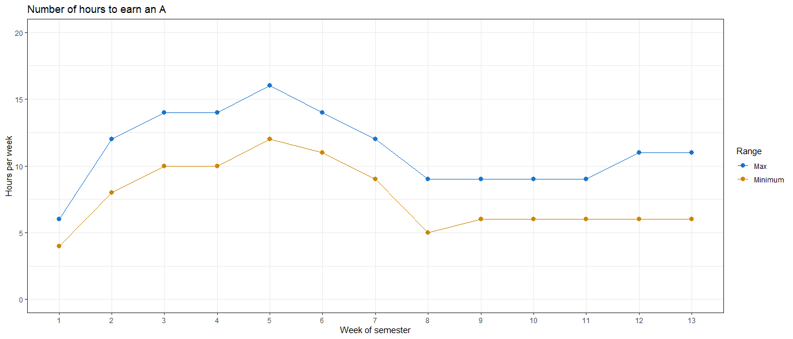

Welcome to Math 335/CSE 350!
Introduction to Sister Larson
My family

My background
- Undergraduate in Applied Mathematics from BYU-Idaho
- Masters degree in Statistics from BYU
- Biostatistician at Myriad Genetics doing cancer research
- Then back to BYU-Idaho!
My interests
- Wanted to be an archeologist
- Unique applications of math. For example…
- Stained glass windows
- Reading
One-on-one Interviews
- Use the link in I-Learn to sign up for a one-on-one
- My chance to meet you without a mask!
- Quick, 10-minutes, on zoom
Questions for me?
Data Wrangling and Visualization
What is a data scientist?
A blend of programmer, statistician, and communicator that burns with curiosity.
- The truth: The definition is settling, but the professional title of data science still covers a broad set of people and skills.
- When we say “blend” we can just as easily be saying: An almost scientist that can’t quite program, often isn’t the best statistician in the room and asks too many questions.
What do you think?
- What makes a good data scientist?
- What skills does a data wrangler need?
Do some research, and post your answers here:
Why do we attend college?
Peter Gray on Education
Anthropologists have reported that the hunter-gatherer groups they studied did not distinguish between work and play–essentially all of life was understood as play…
With the rise of schooling, people began to think of learning as children’s work. The same power-assertive methods that had been used to make children work in fields and factories were quite naturally transferred to the classroom.
If children learn nothing else in school, they learn the difference between work and play and that learning is work, not play.
Jeffry R. Holland on learning
So let’s talk about learning. As a teacher at heart, I love the word and the idea, though I do think we should define it a little better than we usually do. … I don’t just mean the accumulation of knowledge, though that is part of it. I also don’t just mean passively listening to a lecture or memorizing facts. I mean learning in the sense of growth and change, of insight leading to improvement, of knowing the truth, which in turn leads us closer to the God of all truth.
BYU-Idaho Mission Statement
To develop disciples of Jesus Christ who are leaders in their homes, the Church, and their communities.
Class Format
Weekly Process
- “Being” Readings
- Class Tasks
- Case Studies
Additional Assignments
- Semester project
- Coding challenge
“Being” Readings
Assigned readings to help you understand the big picture of data science, and gain context for the skills you are learning.
- Make comments in Perusall (we’ll talk about this later)
- Student-lead reading discussion every Wednesday. Come prepared!
Class Tasks
These tasks help you practice new skills before attempting the case study.
- Can be challenging, but should be less time consuming than the weekly case studies
- The first two weeks are not as consistent as the remaining weeks
Case Study Format
- Week 1 and Week 2 are slightly different
- Week 3 begins the standard case study format
- Open ended question to answer with data provided
…
- Compile your
.mdand.htmlfile into your git repository - Find two other student’s compiled files in their repository and provide feedback using the issues feature in GitHub (If they already have three issues find a different student to critique)
- Address 1-2 of the issues posted on your project and push the updates to GitHub
- Open ended question to answer with data provided
- Every Monday two students present their case studies to the class


How to get an “A”
Grading Philosophy
- In a specifications-grading system all tasks are evaluated on a high-standards pass/fail basis using detailed checklists of task requirements and expectations.
- Letter grades are earned by passing marks on a set of tasks.
- This system provides for a variety of choice and is closer to how learning, and work, is done in the real world.
- It will be easy for us to tell if work is complete, done in good faith, and consistent with the requirements.
Specifications Grading

Workload to get an “A”

To get a “B”
You don’t do B work on all the tasks and case studies - You do A work on half of them.
- Focus on the first 5-weeks material. Pick and choose work after the foundation material.
- I know everyone can earn a B or higher.
Before next class….
- Sign up for an interview with Sister Larson
- Complete Task 1 (you do not need to submit anything)
- Come to class prepared to ask questions about the syllabus or homework tasks
- Come to class prepared to have a discussion on the assigned reading from Task 1